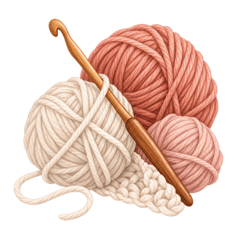
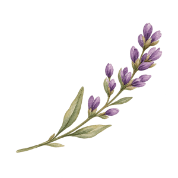
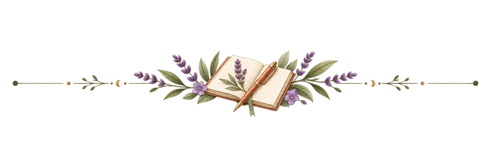
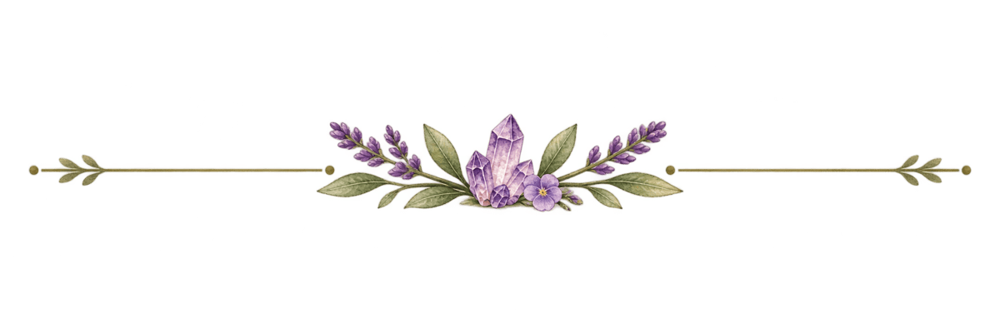
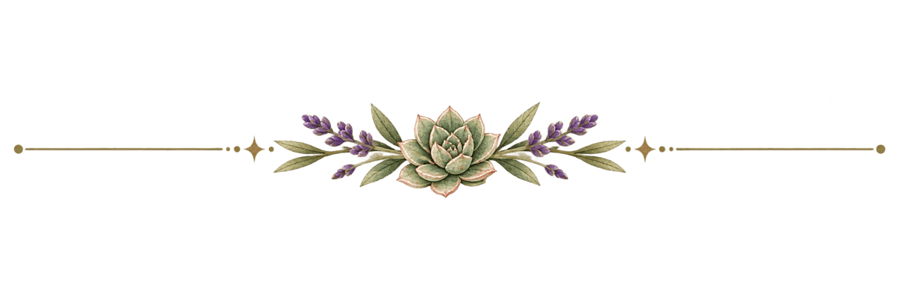
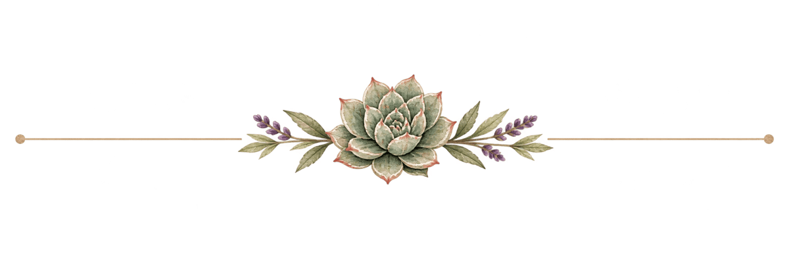

Photograph to come —
the big cozy throw
the big cozy throw
The Big Cozy Throw
A blanket that took approximately forever.
What I’ve made, what I’m making, the things that finally made crochet click for me, and the supplies I actually reach for.


Crochet has been in and out of my life for years. It started with a cheap hook, a YouTube tutorial, and zero patience.
It stuck when I slowed down and stopped trying to be perfect.

A blanket that took approximately forever.
Sturdy, simple, and goes with everything.
First amigurumi. Many yarns were harmed.
Made a million of these. Great last-minute gift.

Here’s what I wish someone had told me.
What you actually need to get started.
The first stitches are supposed to look like that.
What helped it click for me.
Crochet notation without the headache.
Good first projects you’ll actually love.

And what you probably don’t need yet. You need a hook, yarn, scissors, and something to weave your ends with. Everything calm down.
